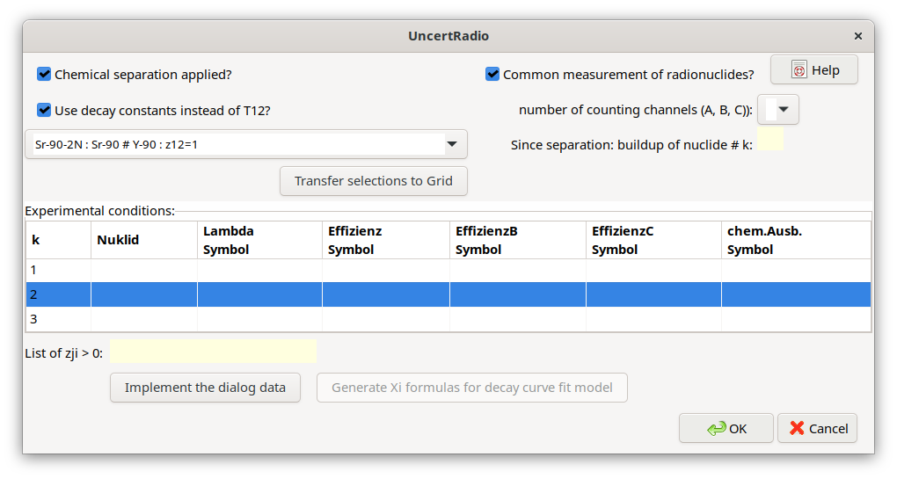
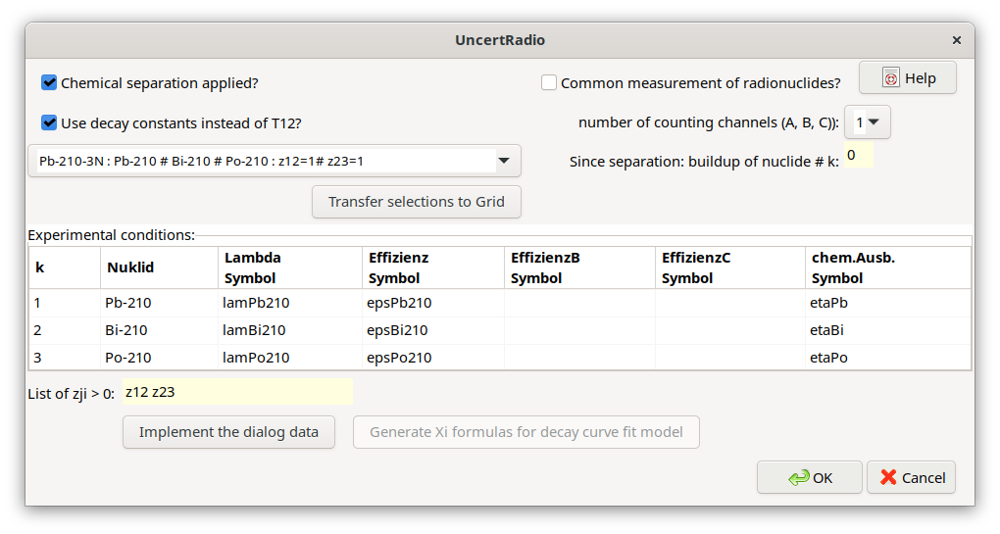
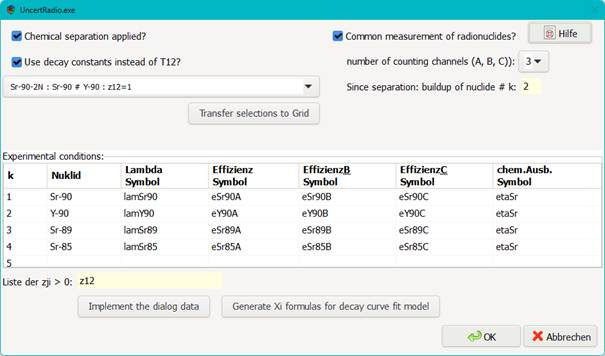

4.14. Application of decay series¶
4.14.1. Basic procedure¶
The time behaviour of atom numbers \(N_{i}(t)\) of the radionuclides (members) of a decay chain is in principle modelled by a system of first order differential equations. They are called the Bateman equations after H. Bateman’s publication of 1910. Their solution led to atom numbers \(N_{i}(t > 0)\), which by radioactive decay can be expected after a time duration \(t\) from the atom number \(N_{i}(t = 0)\) at \(t = 0\).
More recent work on improved solutions for such a system applies matrix-based methods, which are applicable in an automated way also for more complex decay chains. The method published by E. Levy in 2019 was chosen for UncertRadio, more specifically the \(\mathbf{F}\)-Matrix introduced in chapter 4 of his publication. It was found that the result of a series expansion of an exponential function of a decay matrix as used before lead to a single matrix, the \(\mathbf{F}\)-Matrix. In environmental radioactivity mainly the activities of radionuclides are of interest instead of their atom numbers. The general relation \(A_{i} = \lambda_{i} \cdot N_{i}\) between activity and atom numbers allows to derive an \(\mathbf{F}\)-Matrix for activities. The rank of the matrix is equal to the number of members of decay chain, denoted as \(L.\) In his chapter 4, Levy derived an algorithm for calculating the elements of the matrix \(\mathbf{F}\), which is of left-triangular shape. An important feature of \(\mathbf{F}\) is that it holds only for the given time \(t\); for any other time value, \(\mathbf{F}\) always has to be re-computed.
For calculating the elements of the \(\mathbf{F}\ m\)atrix only the decay constants \(\lambda_{i}\) and the values of branching ratios \(z_{j,i}\) (mit \(j < i\)) of the radionuclides are required. The latter are stored in a separate matrix of rank \(L\). After initialisation of this matrix by zero, only those elements \((i,j)\) are set for which \(z_{j,i} > 0\) holds. For a decay chain of length \(L\) and without branching just \(L - 1\) values \(z_{j,i}\) exist. The diagonal elements of the matrix \(\mathbf{F}\) contain decay factors \(\exp\left( - \lambda_{i}t \right)\) (without correcting decay during the measurement duration \(t_{m}\)) or function values \(fd(t,tm,xlam)\) (with correcting decay during the measurement; see Abschnitt 5.8).
For a vector \(\mathbf{a}_{\mathbf{0}}\) of start activity values given at \(t = 0\), the vector \(\mathbf{a}_{\mathbf{t}}\) of activities after the time duration \(t > 0\) is calculated by matrix multiplication:
For the application in UR this is called „forward calculation“. The activity unit used in this equation must be Bq.
When specific activities are to be considered, it must be observed that the associated calibration factors relating count rates to specific activities must not contain such decay corrections which are already part of \(\mathbf{F}\). If this condition is fulfilled, the matrix equation given above can also be applied for specific activities. The matrix \(\mathbf{F}\) in that case remains the same.
4.14.2. Decay corrections¶
The vector \(\mathbf{a}_{\mathbf{t}}\ \)is calculated from \(\mathbf{a}_{\mathbf{0}}\) by (4.14.1); this step was called „forward calculation”. If the decay chain has only radionuclide decaying to a stable isotope, the inversion of this step („backward calculation“)is often termed „decay correction“: it means the ratio \(a_{1}(0)/a_{1}(t)\). The activity determined at the time of measurement is back calculated to the date of sampling.
For decay chains of two or more members, the backward calculation becomes more complicated. As an example, consider the decay chain Pb-210/Bi-210/Po-210. The non-trivial problem now consists in deriving the Pb-210 activity at the time of sampling from measurements of the later measurements of the decay products.
For the most elegant solution method of this task, the (4.14.1) is interpreted as a linear least squares problem. The matrix \(\mathbf{F}\) is considered as the design matrix and the vector \(\mathbf{a}_{\mathbf{0}}\) is treated as the desired solution vector. The vector \(\mathbf{a}_{\mathbf{t}}\) represents the measurements. A covariance matrix \(\mathbf{U}_{\mathbf{a}_{\mathbf{t}}}\) can be established associated with \(\mathbf{a}_{\mathbf{t}}\). We assume that this matrix is diagonal.
Under these assumptions the least squares problem can be solved by the following two equations (see CHAGR-ISO-01, section 4.2):
The computation of these equations is easily done. The advantage of these equations is that the vector \(\mathbf{a}_{\mathbf{0}}\) and the associated covariance matrix \(\mathbf{U}_{\mathbf{a}_{\mathbf{0}}}\) are practically obtained by the same combined step.
Alternatively, a recursion procedure can be applied. According to the literature [Blobel, Lohrmann, chapter 3.4, Press at al., 1992, section 2.3], the elements of the vector \(\mathbf{a}_{\mathbf{0}}\) are calculated by a recursive scheme („forward substitution“) from the left triangular matrix (\(\mathbf{F}\)). The scheme is described by the following equations:
Before calculating the uncertainties, the components \(a_{0;j}\) of \(\mathbf{a}_{\mathbf{0}}\) in the right-hand side of the equation for \(k > 1\) need to be substituted by corresponding components of the vector \(\mathbf{a}_{\mathbf{t}}\).
The calculations according to (4.14.5), which may become more tedious for longer decay chains, are simplified by the LS procedure. The coefficients \(d_{j,i}\) formally define a matrix \(\mathbf{D}\), which can be established by (4.14.3):
The equations (4.14.5) and (4.14.6) formulated for a 3-member decay chain are:
(4.14.5) can be re-formulated as follows by tracing back the uncertainties of \(A_{i}(t)\) to the uncertainties of the input quantities \(x_{j}\):
This means, the sensitivity coefficients of the uncertainty propagation are multiplied by factors \(d_{k,i}\) multipliziert. Dependent on the size of \(d_{k,i}\), these factors have the potential to raise the uncertainties of \(A_{k}(0)\). For the example of the decay chain Pb-210/Bi-210/Po-210, this effect increases by increasing the time interval \(t\) relative to the half-live of Bi-210.
UncertRadio contains the code for calculating \(\mathbf{F}\) and the (4.14.1) through (4.14.8).
4.14.3. Impact on the decision threshold and the detection limit¶
The ISO 11929-related procedure for deriving the decision threshold and the detection limit needs to be modified in the case of the decay corrections for a decay chain. This is explained for the decay chain Pb-210/Bi-210/Po-210, for which the activity A1(0) of the first member of the chain shall be calculated. The common relation A1(0) =w*Rn between activity and net count rate does no longer apply, because this activity originates from two count rates, those of Bi-210 and Po-210.
The corresponding relation shall be modelled by an equation like A1(0)= w1*Rn1 + w2*Rn2. A modified or assumed activity \(\widetilde{A}\) of the output quantity is obtained by multiplying the primary values \(A_{1}(0)\) by a “modifying factor” \(\widetilde{q}\):
The modified count rate values \({\widetilde{R}}_{nk} =\) \(\widetilde{q} \cdot {\widetilde{R}}_{nk}\) (\(k\)= 1,2) lead to modified values \({\widetilde{R}}_{bk} = {\widetilde{R}}_{nk} + R_{0,k}\) and uncertainties \(u^{2}\left( {\widetilde{R}}_{b,k} \right) = {\widetilde{R}}_{b,k}/t_{b}\) of the gross count rates, from which the uncertainty \(u(\widetilde{A})\) is derived, based on uncertainty propagation of equation (4.14.9). This represents one iteration step in calculating the detection limit. Values for the two „calibration factors“ w1 and w2 are not always easily calculated, because they contain also elements of the \(\mathbf{F\ }\)matrix. They can more generally be derived numerically by the partial derivatives of the output quantity with respect to the net count rates \(R_{n,k}\):
4.14.4. Implementation of decay chains in UncertRadio¶
The implementation requires an additional function for executing the more complex calculations of decay corrections for a decay chain. A function SDECAY is implemented in UncertRadio which is called within the set of user-defined equations for the evaluation of the model. The function call has the form:
Symb0 = SDECAY(fmode, tdiff, tms, avg, Nstart, Ndest,
SymbAct1, SymAct2, SymbAct3, ...)
SDECAY calculates a value and a standard uncertainty by using the least-squares method outlined above, which are attributed to the variable named Symb0 (which is an activity in Bq).
The meaning of the function parameters are explained in the following table.
Variable |
Meaning |
|---|---|
fmode |
Forward calculation (=1) or backward calculation (=0), starting from the respective activities; integer |
tdiff |
Time difference; UR symbol |
tms |
Measurement duration; UR symbol |
avg |
Include (=1) or not (=0) the corrections for decay during the measurement; integer |
Nstart |
number of that decay chain member, from which on the decay shall be considered (Nstart >1) of if the full decay chain si to be considered (Nstart=1); integer |
Ndest |
number of that decay chain member, the activity of which shall be calculated; integer |
SymbAct1, SymbAct2, … |
List of the UR activity symbols of the starting values of the decay chain (fmode=1) or of the end values of the decay chain (fmode=0); one may use more than the 3 activity symbols shown in the call |
Symb0 |
UR symbol of the arrays Messwert and StdUnc, to which the SDECAY function value and standard uncertainty are attributed to |
Bemerkung
the values of Nstart and Ndest always refer to the full decay chain, even if Nstart > 1 is selected.
Example calls:
Symb0 = SDECAY(fmode, tdiff, tms, avg, Nstart, Ndest, SymbAct1, SymbAct2, SymbAct3)
cPb210_t1 = SDECAY(0, t2minust1, tmBi210, 0, 1, 1, cPb210_t2, cBi210_t2, cPo210_t2)“0“: (fmode): backward calculation; “t2minusT1“: (diff) time difference t2 – t1; “tmBi210“: (tms) counting duration (taken from Bi-210); “0, 1, 1“ mean: “0“: (avg): without correcting decay during the measurement; the first “1“: (Nstart) the decay chain starts from member 1; the second “1“: (Ndest) the decay chain member for which the activity shall be calculated.
“From the activities of the three decay chain members (the last three symbols within the call), given at the time t2, the activity of Pb-210 (the first member: Ndest=1) at t1 (fmode=0) is to be calculated without correcting for decay during measurement; the measurement duration, tmBi210, is not used.”
cPo210_t1 = SDECAY(0, t2minust1, tmBi210, 0, 2, 3, cPb210_t2, cBi210_t2, cPo210_t2)“0“: (fmode): backward calculation; “t2minusT1“: (diff) time difference t2 – t1; “tmBi210“: (tms) counting duration (taken from Bi-210); “0, 2, 3“ mean: “0“: (avg): without correcting decay during the measurement; “2”: (Nstart) the decay chain starts from member 2 (sub-chain Bi-210/Po-210); “3”: (Ndest) the third member of the full decay chain for which the activity shall be calculated.
“The decay chain considered starts from the second member (i.e., the chain Bi-210/Po-210). From the activities of the two decay chain members of three (the last three symbols/parameters within the call), given at the time t2, the activity of Po-210 (Ndest=3) at t1 is to be calculated without correcting for decay during measurement; the measurement duration, tmBi210, is not used.”
If a call of SDECAY is found in one or more equations, a decay chain dialog is invoked:
In the upper part of this dialog certain measurement related conditions can be defined. A list box allows the selection of the decay chain from some pre-defined decay chains, in this case, the chain Pb-210/Bi-210/Po-210. The possible condition selections are:
Is a chemical separation applied? |
In the case of combined Sr-89/Sr-90 measurements: yes, the separation of Y-90 from Sr-90 |
|---|---|
No. (1,2 or 3) of the radionuclide, which is build up since the separation |
|
Common measurement of the decay chain members on the same detector? |
May be yes in the case of beta-emitting radionuclides; depends on the measurement design |
Number of counting channels (energy windows): |
Usually 1; in the case of LSC measurements, there may be used more than one channel |
Shall decay constants be the input quantities instead of half-lives? |
Yes: decay constants used; No: half-lives used |
A few pre-defined decay chains are available in a file
List_DecaySeries.txt, which is read by UR if required:
List of available decay series:
Sr-90-2N : Sr-90 # Y-90 : z12=1
Zr-95-3N : Zr-95 # Nb-95m # Nb-95 : z12=0.0108# z13=0.9892# z23=0.944
Pb-210-3N : Pb-210 # Bi-210 # Po-210 : z12=1# z23=1
Pb-210-2N : Pb-210 # Po-210 : z12=1
The structure of the file is simple:
every decay chain gets a short name (a string);
then the nuclide names follow, separated by the character #;
then the necessary branching ratios zji (with \(j < i\)), which are not zero.
With the button „Transfer selections to Grid“ pre-defined symbol names are transferred to the grid for detection efficiencies (up to three when using more than one counting channel) and chemical yields, which are pre-defined from the radionuclide name. The columns of unused detection efficiencies are left empty.
Now, the pre-defined symbols in the table (grid) can be modified. Thereafter, the symbols in the table are merged into the symbol list of the UR project by using the button “implement the dialog data”. For these symbols values and uncertainties have to be inserted in the TAB „Values, uncertainties”.
For a further editing of this dialog at a later time, it can be re-opened from the Menu Edit – Edit Decay chain.
4.14.5. Example project¶
Pb210_Bi210_Po210_series_backwards_EN.txp
A short description is included in this example project file.
4.14.6. Generation of decay factor formulas¶
In the case of radiochemical Sr-89/Sr-90 analyses, formulas for decay factors need to be established. In beta radiation counting both Sr isotopes, Sr-89 and Sr-90, contribute to the same count rate. The decay of Sr-90 is accompanied by an ingrowth of its daughter product Y-90 which also contributes to the count rate. The complete formulas for this application can already be complicated, especially, when corrections for the decay during the measurement are included.
For such an application, UncertRadio supports the user by an additional option for building these formulas as strings which are then transferred into the text field in the dialog for defining the evaluation model of decay curves.
This option can be invoked from the Menu Edit – Edit decay chain. This option does not require an SDECAY function call within an UR equation.
For the example mentioned at the begin of this section, the dialogs layout is as follows:
With the button Generate Xi formulas for decay curve fit model the corresponding formula strings are generated and transferred in to the associated text field of the model dialog.
The (coded) result is the following:
X1 = eSr90A * fd(tAs+tstart,tmess,lamSr90) + eY90A * 1/(lamSr90-lamY90)* ( lamY90*
( fd(tAs+tstart,tmess,lamY90)-fd(tAs+tstart,tmess,lamSr90)) )
X2 = eSr89A * fd(tAs+tstart,tmess,lamSr89)
X3 = eSr85A * fd(tAs+tstart,tmess,lamSr85)
X4 = eSr90B * fd(tAs+tstart,tmess,lamSr90) + eY90B * 1/(lamSr90-lamY90)* ( lamY90*
( fd(tAs+tstart,tmess,lamY90)-fd(tAs+tstart,tmess,lamSr90)) )
X5 = eSr89B * fd(tAs+tstart,tmess,lamSr89)
X6 = eSr85B * fd(tAs+tstart,tmess,lamSr85)
X7 = eSr90C * fd(tAs+tstart,tmess,lamSr90) + eY90C * 1/(lamSr90-lamY90)* ( lamY90*
( fd(tAs+tstart,tmess,lamY90)-fd(tAs+tstart,tmess,lamSr90)) )
X8 = eSr89C * fd(tAs+tstart,tmess,lamSr89)
X9 = eSr85C * fd(tAs+tstart,tmess,lamSr85)
4.14.7. Decay Chain Literature¶
Levy, E.: Decay chain differential equations: Solutions through matrix analysis. Computer Physics Communications, 2019, Vol. 234, S. 188-194.
[Blobel, Lohrmann, Kapitel 3.4]
Blobel, V., Lohrmann, E.: Statistische und numerische Methoden der Datenanalyse. Teubner Studienbücher Physik. 1. Auflage. Stuttgart: Vieweg+Teubner Verlag, 1998, 358 S. ISBN 978-3-519-03243-4
Kapitel 4.2 in:
Kanisch, G., Aust, M.-O., Bruchertseifer, F., Dalheimer, A., Heckel, A., Hofmann, S., et al.: Bestimmung der charakteristischen Grenzen bei der Aktivitätsbestimmung radioaktiver Stoffe – Teil 1: Grundlagen. Version Mai 2022. CHAGR-ISO-01
In: Bundesministerium für Umwelt, Naturschutz, nukleare Sicherheit und Verbraucherschutz, (Hrsg.): Messanleitungen für die Überwachung radioaktiver Stoffe in der Umwelt und externer StrahIung. ISSN 1865-8725. Verfügbar unter: https://www.bmuv.de/WS1517
In Vorbereitung: Kanisch, G., Aust, M.-O., Bruchertseifer, F., Dalheimer, A., Heckel, A., Hofmann, S., et al.: Zeitverhalten bei mehrgliedrigen Zerfallsreihen. Version Maixxx 2025. ZERFALL/MEHRGL
In: Bundesministerium für Umwelt, Naturschutz, nukleare Sicherheit und Verbraucherschutz, (Hrsg.): Messanleitungen für die Überwachung radioaktiver Stoffe in der Umwelt und externer StrahIung. ISSN 1865-8725. Verfügbar unter: https://www.bmuv.de/WS1517